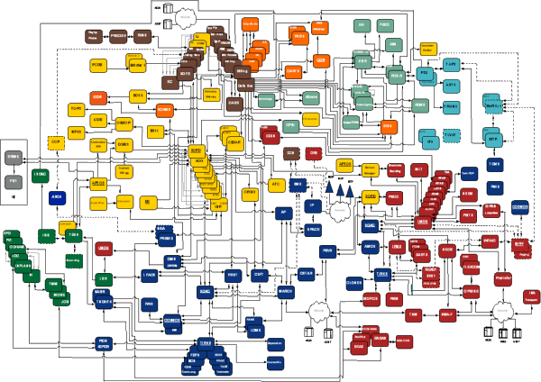

Tigerstripe Workbench is a modeling environment that focuses on the design, test and deployment of integration interfaces between systems and applications in a typical Enterprise Architecture.
Historically, enterprise integration has been necessary for the exchange of information between applications and systems in an Enterprise Architecture. The tasks involved with the design and implementation of the integration points between the applications are usually time consuming and error prone, leading to very tightly coupled systems which are very difficult and costly to maintain.
Service Oriented Architecture (SOA) provides a new way to develop your Enterprise Architecture blueprint by using the concept of self-contained services. These self-contained services offer very specific capabilities that can be composed into more complex services to support end-to-end business process. The right level of granularity in designing and assembling these services leads to a more agile architecture, ultimately leading to a more cost effective solution and decreasing the time to market.

The key to success lies in the design of your enterprise services and how you answer the following questions:
Tigerstripe Workbench is a unique design environment that helps an Enterprise Architect address these questions by allowing them to capture business requirements and turn them automatically into documented service specifications ready for implementation and deployment.
When designing a Service Oriented Architecture, the key to success lies in the definition, design, and documentation of the services themselves before proceeding to implementation and deployment. Since a Service Oriented Architecture is centered around Service Consumers and Service Producers it is important to capture in a Service Contract the specifics of a service as it is being provided for consumption. Once you publish the contract for all services available in the Enterprise Architecture, assembling existing services into more complex ones to support business processes is easier and less error-prone. This repository of well specified and documented service contracts allows you to quickly support new business processes or evolve existing ones rapidly.
Tigerstripe Workbench tackles this problem by focusing on Service Contracts that capture, in business terms, the specifics of a service as it will be offered to its consumers. From a high-level perspective, Service Contracts contain the following:
- Documentation, from basic identification of a contract to details about governance, use cases, and deployment related information.
- Information Model, as it is understood and presented by the service. How is a customer represented? What are the network resource exposed through the service?
- Capabilities, as offered by the service. Does the service offer any query mechanism? Is there any unsolicited notifications that service consumers can subscribe to?
Through a set of Wizards, Tigerstripe Workbench guides you through the definition of a Service Contract. Once defined, Tigerstripe will automatically generate the following:
- "Tight-Specification", a technology-specific specification of the Service Contract, including J2EE, XML-based messaging, or Web Services (WSDL).
- Web-based Documentation, detailing the information and capabilities of a contract in a format that can be published within the enterprise or provided as reference for implementation (to System Integrators or in-house implementation teams).
Tigerstripe Workbench is organized around Projects. A Tigerstripe Project is a container where you can capture, store, and document anything related to Service Contracts, such as information models, service capabilities, and UML diagrams. Typically, Tigerstripe Projects contain the details of one or more Service Contracts, but can also contain only an information model in order for it to be shared across several projects by establishing dependencies between projects.
A Tigerstripe Project maps directly onto an Eclipse project. As such, it can be versioned, opened, and closed like any regular Eclipse project. For more details about operations on Tigerstripe Projects, refer to Tigerstripe Projects.
As for any software component, Service Contracts evolve as your business processes evolve, as new applications or systems are deployed in the enterprise, or as existing applications are upgraded or changed. Since Tigerstripe allows you to capture the details of a Service Contract, it makes it easier to track changes and assess the impact to existing Information Models and Service Capabilities before changing the actual implementation of a service.
Tigerstripe Projects
Core Tigerstripe Artifacts
Tigerstripe Artifacts for Service Contracts
Tigerstripe Profiles
Generated Elements

© copyright 2005, 2006, 2007 Cisco Systems, Inc. - All rights reserved